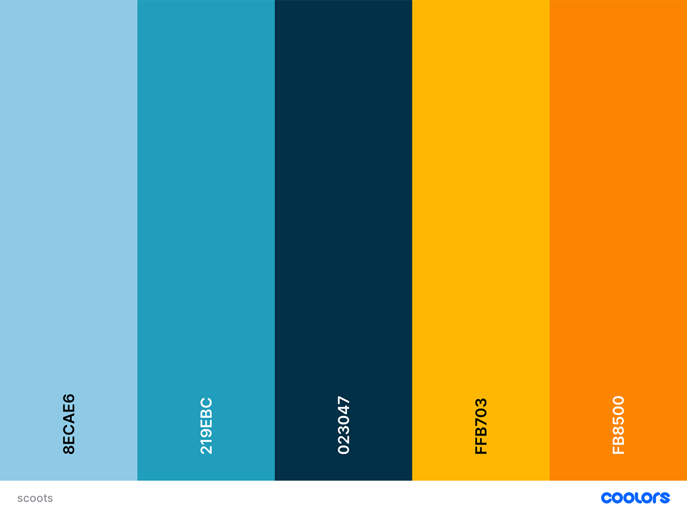
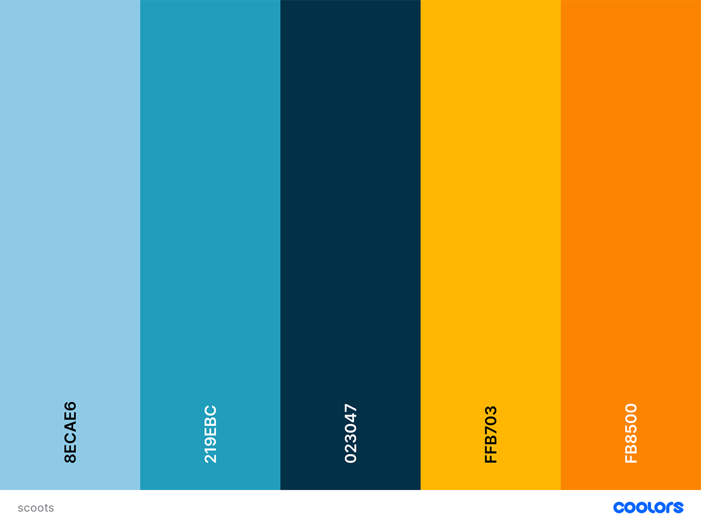

Color-Scheme
The primary color is the middle color. The first two colors will be used in the nav and footer. The orange and yellow will be in the photography and accented here and there on the website.I will be using white also.
The primary color is the middle color. The first two colors will be used in the nav and footer. The orange and yellow will be in the photography and accented here and there on the website.I will be using white also.
